目录
author：素心
本文比较长，绕的也比较快，需要慢慢跟着敲代码并亲自运行一遍，并发编程本身来说就是编程里面最为抽象的概念，单纯的理论确实很枯燥，但这是基础，基础不牢，地洞山摇，在概念这节里面还需要好好的品味一番。如果跟着这篇文章敲代码的话，推荐Python 3.6 版本以上
Python并发的概念非常的抽象，但同时也非常的重要，因为这事关能不能准确的写出高并发的质量性代码。
进程：顾名思义，正在进行的一个过程。
背景：进程起源于操作系统，是操作系统最核心的概念，也是操作系统提供的最古老最重要最抽象的概念之一。
即使操作系统只有一个CPU，但是使用进程的概念也能使这一个CPU支持并发的能力，这种并发就称之为伪并发。
将一个CPU变成多个虚拟的CPU的技术就称之为多道技术。而多道技术又分为时间多路复用和空间多路复用（当然，必须硬件支持隔离），所以就有这样一个理论，没有进程的抽象，现代计算机将不复存在。
在进程并发上，操作系统起着非常重要的作用，它隐藏了复杂的硬件接口，提供了良好的抽象接口，与此同时，它更是对进程的管理与调度起着不可或缺的作用，因为如果没有操作系统来管理进程，多个进程就会变得杂乱无章，使得计算机资源严重浪费。
前边提到了多道技术，不难发现，它就是针对单核的计算机实现并发。
举个例子：
假设现在双击桌面上的IDM快捷方式，然后呈现软件界面。其实后台运行了很多的复杂的IO操作。
而这里的多道技术可以理解为多个程序，使用空间复用就是在内存中同时跑多个程序，够简单了吧。
同样举例说明：
我们知道有一款下载软件叫IDM，下载速度非常的快，它的原理其实就是将一个文件切割成非常多的细小文件下载，假设现在下载一张图片，它会将一张图片分为10块，现在有2个进程同时下载，在遇到阻塞的情况下，就切换到其他小块下载，下载完之后再回到这个小块上试试能不能继续下载，如果不能，就再切换到其他的小块，如此往复循环，直到一个完整的文件下载完毕。
时间上的复用，其实就是复用CPU上的一个时间片，进程在执行的时候，遇到IO就切换，占用CPU时间过长的时候也切，值得注意的是，在切换之前，会保存进程的状态，这样才能保证下次切换回来的时候继续上次停顿的地方。
多进程的概念网上比比皆是，简单来讲，就是正在进行的一个过程或者一个任务，而负责执行任务的是CPU。
需要注意的是，进程和程序之间是有区别的，两者绝对不能混淆。
进程与程序之间的区别：
程序仅仅是一堆代码，而进程是这堆代码的执行过程
看到这里还在迷糊不要紧，举个例子就能很明白了
栗子：
假设M正在织毛衣，组成毛衣的毛线就是一堆堆的代码，而M就是CPU正在执行织毛衣的过程。
那么现在M的丈夫回来了，丈夫说好饿，这个时候就需要考虑哪件事情相对来说重要，M考虑一下，觉得先做饭比较重要，这就是优先级，然后M记录下自己织的毛衣织到哪里了，再去做饭，这种切换就是处理其他优先级高的任务，每个进程拥有各自的程序，就是菜和毛线，当M做完饭后又回来织毛衣，从离开任务的地方继续执行。
这里需要注意一点：同一个程序执行多次，也就是多个进程，比如上边的IDM，我启动两次，就既可以下载苍老师，也可以下载波老师，两个进程之间互不影响。
并行：多个程序同时运行
并发：伪并行，看起来是同时运行，其实质是利用了多道技术
无论是并行还是并发，在用户眼里看起来都是同时运行的，不管是线程还是进程，都只是一个任务，真正干活的CPU，而同一个CPU在同一时刻只能执行一个任务。
我们将可以跑很多应用程序的系统称之为通用系统，那么对于通用系统来说，创建进程有4中形式
不管是哪一种，创建新进程都是由已经存在的进程调用系统创建进程的接口来实现的。
fork，它会创建一个与本身进程一模一样的副本进程，这个被创建的进程就是子进程，二者具有相同的存储映像、相同的环境字符串和相同的打开文件。比如说，在shell解释器中，每执行一个命令就会创建一个子进程createProcess，它会有两种作用，既创建进程，还会将程序装进新的进程以上两种操作系统创建进程并不完全一样
所以说，学习Python推荐在linux上学习，便于后期进程之间的通信，而mac其核心也是linux，所以linux的任何python代码在mac上都是可行的
进程有四种退出方式
python demo.py，而该路径下并没有demo.py文件pa -aux，而系统本身是没有该命令kil -9值得注意的是：
在windows创建进程的时候，父进程会得到一个特别的令牌，这个令牌就是句柄，这个句柄可以控制子进程，这时进程就有了层次的概念，但是windows中的父进程有权把句柄传递给其他子进程，这样一来，进程又没有了层次的概念。
进程有三种状态：就绪、阻塞、运行
举个例子：
现在执行linux命令tail -f web.log | grep '404'
执行程序tail，则会开启一个子进程，而grep又会另外开启一个子进程，这两个进程基于管道|来进行通讯，也就是将tail出来的内容交给grep处理。在这个过程中，grep等待tail的结果，这种现象就是阻塞，如果tail一直阻塞，则grep将无法执行。
实质上总结出一下两点情况：
之所以在这里添加进程表的概念，是为了更好的理解操作系统与进程之间的关联，了解即可
所谓进程的并发，无非是硬件中断一个正在进行的进程，然后保存当前进程的状态。
操作系统会维护一张表格，我们称之为进程表，每一个进程都会占用一个进程表项，这个进程表项就称之为进程控制块。
这张表大致分四块：进程描述信息、进程控制信息、CPU现场保护结构
寄存器值：通用、程序计数器PC、状态PSW、地址包括栈指针
如果你顺利的看到了这里，则已经掌握了进程的理论知识，现在开始最为精彩的代码小节
Python中的多线程是无法利用计算多核的优势，如果需要充分的使用多核资源，在Python中大部分使用多进程。
multiprocessing模块用来开启子进程，并且在子进程中执行指定的任务。
该模块功能诸多：支持子进程、通信、数据共享、执行不同形式的同步，更是提供了 Process、Queue、Pipe、Lock等组件
这里一定要注意：与线程不同，进程没有任何的共享状态，进程修改的数据、改动仅限于该进程之内
创建进程的类：Process([group [, target [, name [, args [, kwargs]]]]])
由该类实例化得到的对象，表示一个子进程中的任务。
注意：
参数：
group：值始终为None
target：调用的对象，即子进程需要执行的任务
args：位置参数元组，按照位置传参
kwargs：按照字典传参
name：子进程名称
方法：
假设p = Process()
p.start()：启动进程
p.run()：进程启动时运行的方法，用于调用target来指定需要执行的函数
p.terminate()：强制终止进程p，并不会做任何的清理操作，如果p下还创建了子进程，那么这个子进程并没有父进程处理，这个子进程就称之为僵尸进程。
p.is_alive()：判断p是否还在运行，如果还在运行则返回True
p.join([timeout])：主线程等待p终止，也可以理解为回收计算机资源，值得注意的是，主线程从始至终处于等待的状态，而p是处于运行的状态，join只能作用于start的进程，而不能作用于run的进程
属性介绍：
p.daemon：默认值为False，如果设置为True，则代表p为后台的守护进程，也就是前边提到的后台运行的守护进程等待用户与之发生交互。当p的父进程终止的时候，p也随之终止 ，并且设定为True之后是不能创建自己的新进程的，改设置必须在start之前设置
p.name：进程的名称
p.pid：进程的PID，和linux的PID类似
from multiprocessing import Process
import time
def fun(name):
print("{} 正在执行。。。".format(name))
time.sleep(2)
print("{} 执行完毕。。。".format(name))
if __name__ == '__main__':
p = Process(target=fun, args=('Chancey',)) # 这里传参必须是以元组的形式传参
p.start()
print("主线程启动。。。")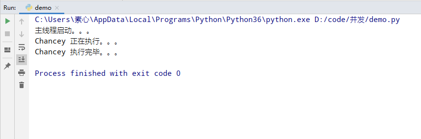
上述例子非常简单，不过，这只是开启了一个进程，接下来开启4个进程
from multiprocessing import Process
import time
def fun(name):
print("{} 正在执行。。。".format(name))
time.sleep(2)
print("{} 执行完毕。。。".format(name))
if __name__ == '__main__':
# 实例化以得到四个对象
p1 = Process(target=fun, args=('Chancey',))
p2 = Process(target=fun, args=('Waller',))
p3 = Process(target=fun, args=('Mary',))
p4 = Process(target=fun, args=('Arry',))
# 调用方法，开启四个进程
p1.start()
p2.start()
p3.start()
p4.start()
print("主线程启动。。。")运行上述代码的时候会发现，四个进程同时进行，同时结束，这是因为设定了sleep的时间。
还有一种启动方式，就是面向对象的三大特征之一的继承，我们通过继承process类并重写父类方法以达到我们的需求
from multiprocessing import Process
import time
class MyProcess(Process):
def __init__(self, name):
super().__init__() # 重用父类的init方法
self.name = name
def run(self): # 重写父类方法
print("{} 正在执行。。。".format(self.name))
time.sleep(2)
print("{} 执行完毕。。。".format(self.name))
if __name__ == '__main__':
p = MyProcess('Chancey')
p.start()
print('主进程')那么开启多进程就变成了
from multiprocessing import Process
import time
class MyProcess(Process):
def __init__(self, name):
super().__init__() # 重用父类的init
self.name = name
def run(self): # 重写父类方法
print("{} 正在执行。。。".format(self.name))
time.sleep(2)
print("{} 执行完毕。。。".format(self.name))
if __name__ == '__main__':
p1 = MyProcess('Chancey')
p2 = MyProcess('Waller')
p3 = MyProcess('Mary')
p4 = MyProcess('Arry')
p1.start()
p2.start()
p3.start()
p4.start()
print('主进程')pid用来查看父进程的ID
ppid用来查看子进程的ID
from multiprocessing import Process
import time
import os
class MyProcess(Process):
def __init__(self, name):
super().__init__()
self.name = name
def run(self):
print("{} 正在执行。。。子进程ID：{}，父进程ID：{}".format(self.name, os.getpid(), os.getppid()))
time.sleep(2)
print("{} 执行完毕。。。子进程ID：{}，父进程ID：{}".format(self.name, os.getpid(), os.getppid()))
if __name__ == '__main__':
p1 = MyProcess('Chancey')
p2 = MyProcess('Waller')
p3 = MyProcess('Mary')
p1.start()
p2.start()
p3.start()
print("主进程", os.getppid(), os.getppid())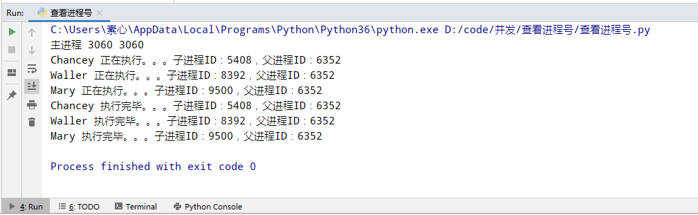
非常的简单，同一个父进程下边有三个子进程工作
在Python的多进程编程中，还有其他很重要的Process对象属性
在主进程运行的过程中如果想并发的执行其他任务，就需要开启子进程，这时就有两种情况
简单示例：
from multiprocessing import Process
import time
import os
class MyProcess(Process):
def __init__(self, name):
super().__init__()
self.name = name
def run(self):
print("{} 正在执行。。。子进程ID：{}，父进程ID：{}".format(self.name, os.getpid(), os.getppid()))
time.sleep(2)
print("{} 执行完毕。。。子进程ID：{}，父进程ID：{}".format(self.name, os.getpid(), os.getppid()))
if __name__ == '__main__':
p1 = MyProcess('Chancey')
p2 = MyProcess('Waller')
p1.start()
p2.start()
p1.join()
p2.join()
print('主进程', '父进程ID：', os.getpid(), '子进程ID：', os.getppid())运行截图：
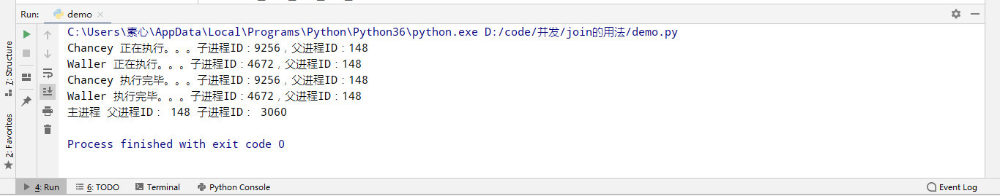
在这里就可以很容易的发现，主进程从原来的最先执行变为了最后，这正是因为使用join使得主进程等待子进程执行完毕才回收，那么，这样下来会不会有僵尸进程的存在，有关僵尸进程忘记的，请移步至第7节的(2)Process类。只需要在上边的代码结尾加上print(p.pid())即可查看
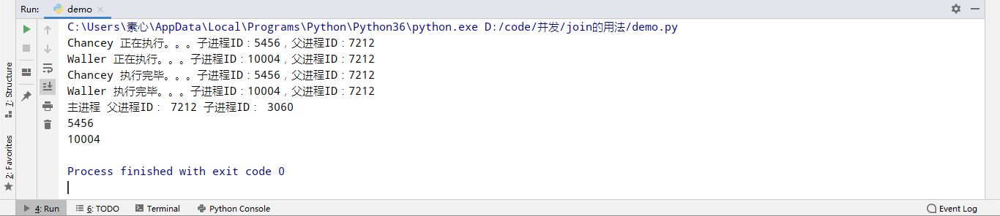
事实证明，这里确实存在了僵尸进程。
多个进程同时进行就是并发，如果多个进程是每一个都等待上一个进程执行完毕之后才执行，这种执行方式就是串行
对上边代码稍微改动一下：
from multiprocessing import Process
import time
import os
class MyProcess(Process):
def __init__(self, name):
super().__init__()
self.name = name
def run(self):
print("{} 正在执行。。。子进程ID：{}，父进程ID：{}".format(self.name, os.getpid(), os.getppid()))
time.sleep(2)
print("{} 执行完毕。。。子进程ID：{}，父进程ID：{}".format(self.name, os.getpid(), os.getppid()))
if __name__ == '__main__':
p1 = MyProcess('Chancey')
p2 = MyProcess('Waller')
p1.start()
p1.join()
p2.start()
p2.join()
print('主进程', '父进程ID：', os.getpid(), '子进程ID：', os.getppid())
print(p1.pid)
print(p2.pid)贴上运行截图
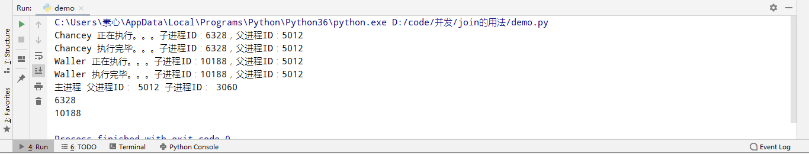
不难发现，其实每个进程都是分时间段进行的，在同一时间并没同时进行，正是所谓的串行。
is_alive方法
该方法是用于查看进程是否存活，如果存活则返回True，反之亦然。
同时这里还有个属性name，用于给进程起名
from multiprocessing import Process
import time
import os
def fun(name):
print("{} 正在执行。。。子进程ID：{}，父进程ID：{}".format(name, os.getpid(), os.getppid()))
time.sleep(2)
print("{} 执行完毕。。。子进程ID：{}，父进程ID：{}".format(name, os.getpid(), os.getppid()))
if __name__ == '__main__':
p = Process(target=fun, args=('Chancey',))
print(p.is_alive())
p.start()
print(p.is_alive())
print(p.name)
print("主进程， 父进程ID：{}，子进程ID：{}".format(os.getpid(), os.getppid()))
print('='*60)
p = Process(target=fun, args=('Waller',), name="Cute_Process")
print(p.is_alive())
p.start()
print(p.is_alive())
p.terminate() # 强制杀死该进程
print(p.is_alive())
time.sleep(3)
print(p.is_alive())
print(p.name)
print("主进程， 父进程ID：{}，子进程ID：{}".format(os.getpid(), os.getppid()))
上边的代码中p.terminate()是为了后边验证是否存活的使用
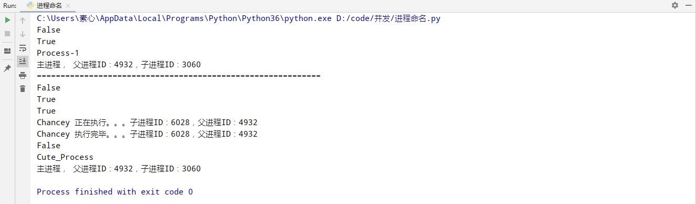
这里可以清晰的看到，在刚刚执行了p.terminate()之后还是返回了True，但是在sleep了3秒之后，又变成了False，所以说，在杀死一个进程的时候并不会立即回收空间；没有命名的进程默认Process-1，取名之后为自己定义的那个值。
在函数中我们都知道如果要在一个函数中使用另外一个函数中的变量，就可以这么写
n = 0
def fun1():
global n
n = 100
print(n)
def fun2():
print(n)
if __name__ == '__main__':
fun1()
fun2()这样一来，在fun2中输出的n就是fun1中的值，那么进程中同样使用global关键字试试
from multiprocessing import Process
n = 0
def fun1():
global n
n = 100
print('子进程中的变量：', n)
if __name__ == '__main__':
p = Process(target=fun1)
p.start()
print('主进程中的变量：', n)非常容易就能发现，其实关键字并没有起作用，这就证明，进程之间的内存空间是隔离的
前边有介绍过什么是守护进程
那么定义守护进程必须在start之前使用daemon定义
写个未使用守护进程的例子：
from multiprocessing import Process
import time
def fun(name):
print('{}正在执行'.format(name))
p = Process(target=time.sleep, args=(3,))
p.start()
if __name__ == '__main__':
p = Process(target=fun, args=("Chancey", ))
p.start()
p.join()
print('主进程')运行上边的代码不会出现任何问题，现在将其改为守护进程
只需要在创建实例的时候添加参数daemon = True即可
动手能力强的人可能已经跑了一遍修改过的代码了，毫无疑问，这段代码有错误，看一下官方文档
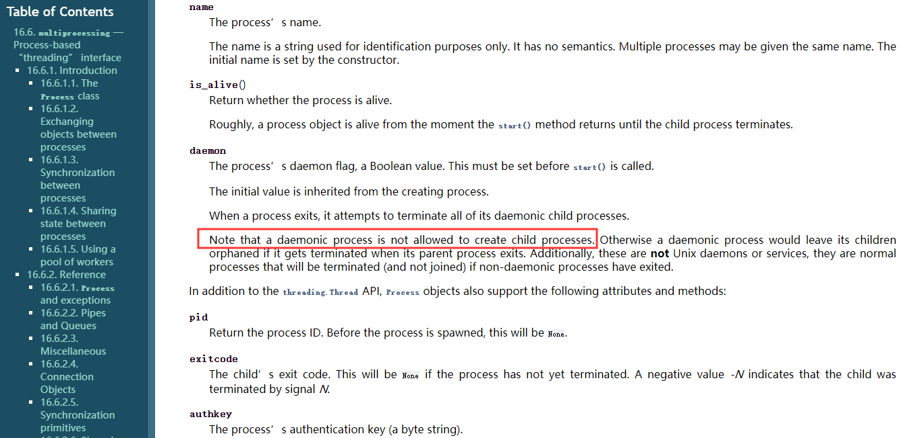
这个说明正好对应上了上边修改过代码的报错
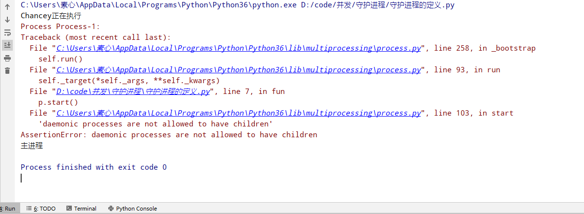
没有猜错，它就是说守护进程的子进程不能再次创建子进程，再次修改代码
from multiprocessing import Process
import time
def fun(name):
print('{}正在执行'.format(name))
# p = Process(target=time.sleep, args=(3,))
# p.start()
time.sleep(3)
if __name__ == '__main__':
p = Process(target=fun, args=("Chancey", ), daemon=True)
p.start()
p.join()
print('主进程')这样一来，主进程总是等待子进程执行完毕才执行，那如果不做join呢，去掉上边代码中的p.join()，执行发现，主进程并没有等待子进程执行完毕，而是直接退出，这也就使得子进程的任务并没有被执行就被迫退出，这就是守护进程存在的意义。
来个多进程的实例：
from multiprocessing import Process
import time
def game(name):
print('%s 正在玩游戏。。。' % name)
time.sleep(3)
print('%s 玩完游戏了。。。' % name)
def sing(name):
print('%s 正在唱歌。。。' % name)
time.sleep(3)
print('%s 唱完歌了。。。' % name)
if __name__ == '__main__':
p1 = Process(target=game, args=('Chancey', ), daemon=True)
p2 = Process(target=sing, args=('Chancey', ))
p1.start()
p2.start()
print("进程一：", p1.name)
print("进程二：", p2.name)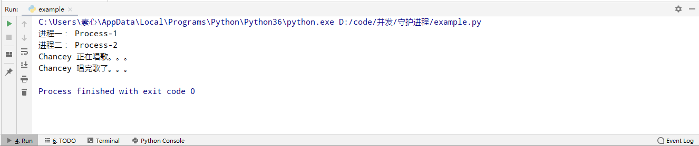
主进程结束后，只会让子进程跟着结束，但是其他的子进程会依旧执行，这就是为什么game没有执行而sing执行的原因，如果在这里join一下呢，答案是肯定的，game和sing都会执行。
现在有一段代码
from multiprocessing import Process
import time
def foo(name):
print("进程{}输出： 1".format(name))
time.sleep(2)
print("进程{}输出： 2".format(name))
time.sleep(3)
print("进程{}输出： 3".format(name))
if __name__ == '__main__':
for i in range(3):
p = Process(target=foo, args=(i, ))
p.start()先不要运行，分析一下逻辑，当运行一个进程，函数中的代码自上而下的执行，所以它应该是这样输出的
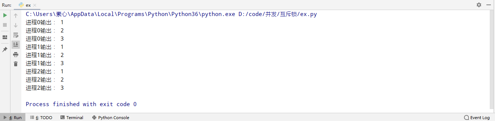
现在运行一下代码
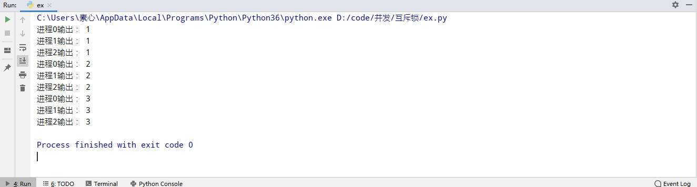
并不是想象那样输出，输出步骤完全紊乱，要是用这样的操作数据库的话，后果不堪设想，估计就得跑路了。
OK，为了解决这种出现数据紊乱的情况，就出现了Lock()互斥锁，它会在运行的时候锁住资源，从而使得其他进程并不会使用该资源。
通俗点讲：现在有一群工人，他们要抢一间房子，当一个工人抢到之后就给房间上一把锁，然后执行任务，这时其他工人在外边等候，当这个抢到房子并完成任务开锁之后，其他工人才能进入执行任务。
这里的工人就是进程，房子就是计算机资源，而门锁就是互斥锁，正是因为有了互斥锁，才保证了共享数据的完整性
语法
mutex = Lock()：实例化一个互斥锁
mutex.acquire()：上锁
mutex.release()：解锁
使用
from multiprocessing import Process, Lock
import time
def foo(i, mutex):
mutex.acquire()
print("进程{}输出： 1".format(i))
time.sleep(2)
print("进程{}输出： 2".format(i))
time.sleep(1)
print("进程{}输出： 3".format(i))
mutex.release()
if __name__ == '__main__':
mutex = Lock()
for i in range(3):
p = Process(target=foo, args=(i, mutex))
p.start()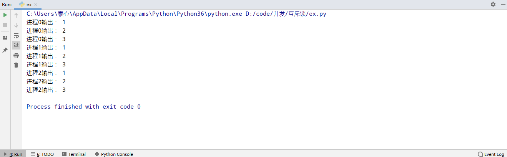
然后这里输出正常了，但是，这里变成了串行， 因为使用时占用时间，影响其他进程等待，所以尽量修改处理块的数据后立即释放锁。
用当下最为火热的抢票过程演示一下互斥锁的使用场景
查询余票是并发的，而购票只能确保一个人成功，所以购票的方法应该使用互斥锁
from multiprocessing import Process, Lock
import time
def search(name):
time.sleep(1)
with open('data.txt') as f:
count = int(f.read())
print('<%s> 查看到剩余票数【%s】' % (name, count))
def get(name):
time.sleep(1)
f = open('data.txt')
count = f.read()
f.close()
count = int(count)
if count > 0:
count -= 1
time.sleep(1)
f = open('data.txt', 'w')
f.write(str(count))
f.close()
print('<%s> 购票成功' % name)
def start(name, mutex):
search(name)
mutex.acquire()
get(name)
mutex.release()
if __name__ == '__main__':
mutex = Lock()
for i in range(5):
p = Process(target=start, args=('顾客%s' % i, mutex))
p.start()这里的data.txt里只有余票，就是数字2，通过运行，多人并发查询，一人购票
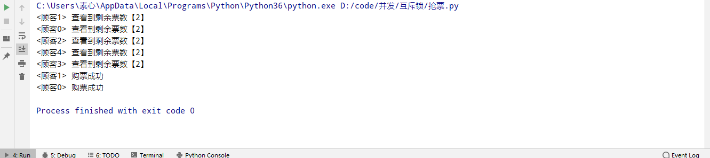
这里想到了join一下里面的get或者search，原理上就会出现所有程序的串行运行，极大的降低了程序的运行效率。
前边有提到，每个进程的空间都是互相隔离的，如果想要在进程之间进行通信，就需要的手段。通常情况下，需要在内存中开辟一块空间，然后多个进程使用同一空间进行IO操作，这个空间就是管道空间。
按照作用可以分为两种：
管道均由Pipe()实现
但是如果多个进程同时进入管道的话，数据依旧会乱，那么这个时候，还是需要加锁，而multiprocessing还提供了Queue，即队列，队列就是管道加锁的体现。
Queue
Queue()：参数为队列的最大项数，不设置则不限制大小
注意：队列里面存放的消息而不是数据，另外，队列占用的是内存空间，所以参数即使不设置也会受限于内存大小
方法
q.put()：插入数据至队列
q.get()：从队列中获取一个数据并删除
q.full()：判断队列是否已满，已满的话返回True，反之亦然
q.empty()：判断队列是否为空，空则返回True，反之亦然
q.nowait(obj)：相当于put(obj, Flase)
q.size()：返回队列的大致长度，不够准确，甚至在linux平台报NotImplementedError错
例如：
from multiprocessing import Queue
q = Queue()
for i in range(5):
q.put(i)
print('队列是否已满：', q.full())
print('队列大小：', q.qsize())
for i in range(5):
q.get()
print('取出一个消息')
print('队列是否为空：', q.empty())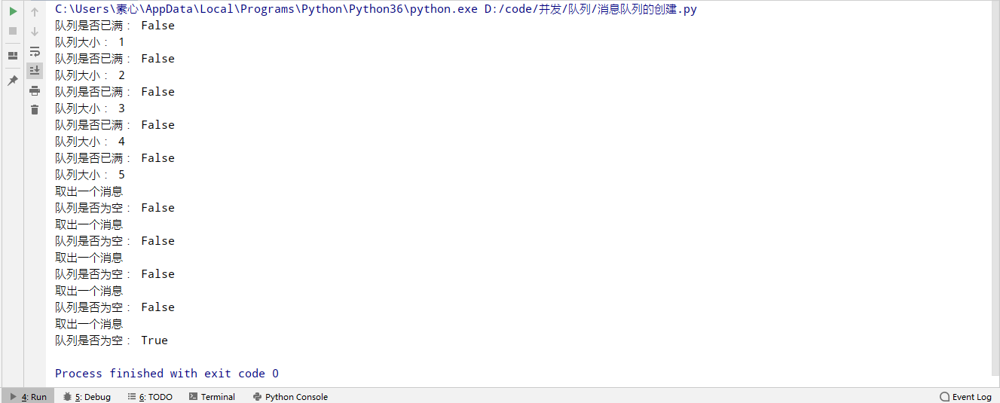
这里并没有限制队列的大小，所以队列一直没满，而在取出的时候，直到取完最后一个消息的时候才返回True
现在设置一下队列大小，将q = Queue()改为q = Queue(3)
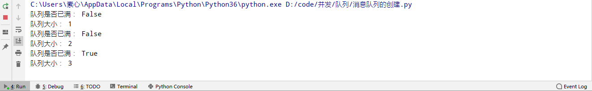
可以看到，当队列大小达到3的时候，进程阻塞，因为设置了队列的大小使得消息添加不进去，但是取出的方法还没有执行，所以就一直阻塞
上边例子中，put添加消息，get取出消息，实际上就是生产者与消费者的关系，一个负责生产数据，一个负责消费数据。
在并发编程中，如果生产者的处理速度非常快，而消费者处理速度慢，这时生产者就需要等待消费者消费完队列的数据才再次生产。同样的道理，如果消费者的处理速度快于生产者的速度，消费者也是要等到生产者生产出数据才能继续执行任务。
实质上，生产者和消费者模式是通过一个容器来来解决生产者和消费者之间的耦合度问题。他们之间彼此不直接通信。而当生产者或者消费者积累一定消息的时候，彼此无法执行，所以当生产者生产完数据的时候，直接扔进一个地方，然后消费者去那个地方那数据，有一个缓冲的作用，被称之为阻塞队列，阻塞队列平衡了生产者和消费者的处理能力，用于耦合他们。
示例：
from multiprocessing import Process, Queue
import time
# 生产程序
def production(q, number):
for i in range(3):
msg = 'URL%s' % i
time.sleep(2)
print("生产者%s生产了" % number, msg)
q.put(msg)
# 消费程序
def consumption(q, number):
while True:
msg = q.get()
if msg is None : break
time.sleep(2)
print('消费者%s爬取了%s' % (number, msg))
if __name__ == '__main__':
q = Queue()
# 生产者们
p1 = Process(target=production, args=(q, 1))
p2 = Process(target=production, args=(q, 2))
p3 = Process(target=production, args=(q, 3))
# 消费者们
c1 = Process(target=consumption, args=(q, 1))
c2 = Process(target=consumption, args=(q, 2))
p1.start()
p2.start()
p3.start()
c1.start()
c2.start()
p1.join()
p2.join()
p3.join()
q.put(None)
q.put(None)
print("主线程")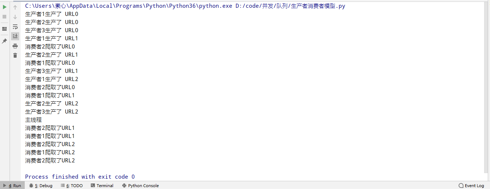
以上生产者充当URL生产器，而消费者则为爬虫，消耗URL来爬取数据，这也正是上次爬虫博文中采用并发的方式
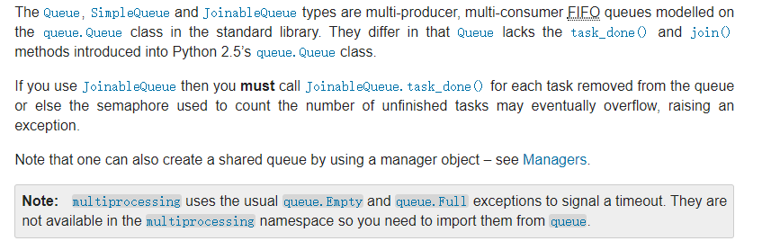
查看官方文档可以看到，除了前边提到的使用Queue来处理队列，这里还有JoinableQueue，其实JoinableQueue就像是一个Queue对象，但是队列允许项目的消费者来通知生产者已经成功处理，通知进程是通过共享的信号和条件。
class multiprocessing.JoinableQueue([maxsize])
JoinableQueue是Queue的子类，额外添加了task_done()和join()方法。
参数介绍
task_done()：指出之前进入队列的任务已经完成。
由队列的消费者进程使用。对于每次调用get() 获取的任务，执行完成后调用 task_done() 告诉队列该任务已经处理完成；如果join()方法正在阻塞之中，该方法会在所有对象都被处理完的时候返回 (即对之前使用put()放进队列中的所有对象都已经返回了对应的task_done() ) ；如果被调用的次数多于放入队列中的项目数量，将引发ValueError 异常 。
join()：阻塞至队列中所有的元素都被接收和处理完毕。
当条目添加到队列的时候，未完成任务的计数就会增加。每当消费者进程调用task_done() 表示这个条目已经被回收，该条目所有工作已经完成，未完成计数就会减少。当未完成计数降到零的时候， join() 阻塞被解除。
from multiprocessing import Process, JoinableQueue
import time
def producer(q):
for i in range(3):
msg = 'URL %s' % i
time.sleep(1)
print('生产者生产了 %s' % msg)
q.put(msg)
q.join()
def consumer(q):
while True:
msg = q.get()
if msg is None : break
time.sleep(2)
print('消费者消耗了 %s' % msg)
q.task_done()
if __name__ == '__main__':
q = JoinableQueue()
p1 = Process(target=producer, args=(q, ))
p2 = Process(target=producer, args=(q, ))
p3 = Process(target=producer, args=(q, ))
c1 = Process(target=consumer, args=(q, ), daemon=True)
c2 = Process(target=consumer, args=(q, ), daemon=True)
p1.start()
p2.start()
p3.start()
c1.start()
c2.start()
p1.join()
p2.join()
p3.join()
print('主线程')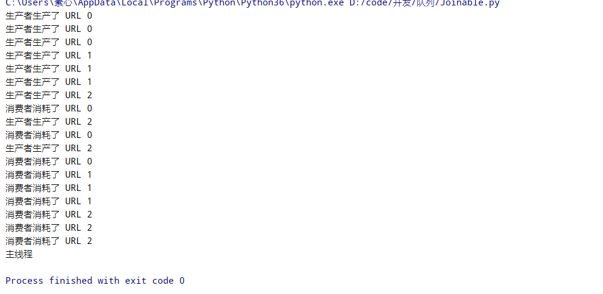
线程和进程就是上下级的关系，相互依赖，许许多多的线程共同组成了进程，而一个进程至少包含一个线程，在这里将会谈到在节省开支的条件下，达到使用资源的最大化。进程只是将资源集合到一起，而线程才是CPU上的执行单位。
多线程，即多个控制线程，需要注意的是，多个线程是共享进程的地址空间的。
开启线程有两种方式，分别是函数式和OOP式
第一种
使用threading模块开启
from threading import Thread
import time
def MyThread(name):
print('%s 正在执行。。。。' % name)
time.sleep(2)
print('%s 执行完毕。。。。' % name)
if __name__ == '__main__':
t1 = Thread(target=MyThread, args=('chancey', ))
t1.start()
print("主线程")第二种
通过继承Thread类并重写run方法开启
from threading import Thread
import time
class MyThread(Thread):
def __init__(self, name):
super().__init__()
self.name = name
def run(self):
print('%s 正在执行。。。。' % self.name)
time.sleep(2)
print('%s 执行完毕。。。。。' % self.name)
if __name__ == '__main__':
t = MyThread('chancey')
t.start()
print("主线程")在选用并发模型上必须对症下药，切记乱投医，不仅会造成资源上的浪费，还会影响程序的执行效率
在主进程下开启线程
from threading import Thread
import time
'''
在主进程下开启线程，这里的主进程就是pycharm
'''
def run(name):
print('%s 正在执行。。。。' % name)
time.sleep(2)
print('%s 执行完毕。。。。' % name)
if __name__ == '__main__':
start = time.time()
t1 = Thread(target=run, args=('chancey', ))
t1.start()
t1.join()
print('主线程')
end = time.time()
print(end - start)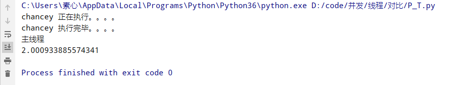
在主进程下开启子进程
from multiprocessing import Process
from threading import Thread
import time
def run(name):
print('%s 正在执行。。。。' % name)
time.sleep(2)
print('%s 执行完毕。。。。' % name)
if __name__ == '__main__':
start = time.time()
p1 = Process(target=run, args=('chancey', ))
p1.start()
p1.join()
print("主进程")
end = time.time()
print(end - start)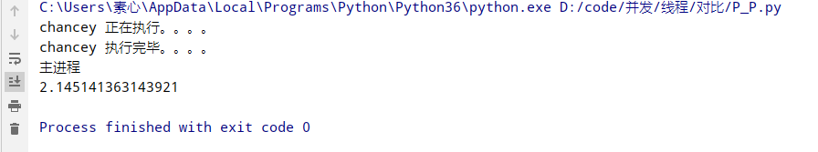
可以很清楚的看到，在启动线程的时候耗时2.0009秒，而启动进程耗时2.1451秒，这说明线程启动的速度非常快。这是因为，在开启进程的时候，p.start()会向操作系统发送一个信号，然后操作系统要申请内存空间以让父进程的地址空间拷贝到子进程，开销远远大于线程。
在前边介绍进程并发的时候，发现每一个进程的PID都不相同，再看下多线程里面（忘记前边内容的朋友可以再去前边跑一遍代码）
from threading import Thread
import time
import os
def run(name):
print('%s 正在执行。。。。' % name, os.getpid())
time.sleep(2)
print('%s 执行完毕。。。。' % name)
if __name__ == '__main__':
t1 = Thread(target=run, args=('chancey', ))
t2 = Thread(target=run, args=('waller', ))
t1.start()
t2.start()
print('主进程', os.getpid())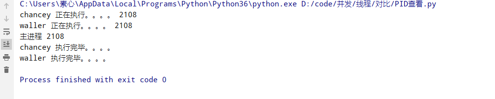
这里很明显就能看到，所有的线程的PID都和主进程的PID一样。
前边多进程中讲过，父进程和子进程之间的地址空间是相互隔离的，父进程和子进程并没有共享内存空间
from multiprocessing import Process
p = 100
def run():
global p
p = 0
if __name__ == '__main__':
p1 = Process(target=run,)
p2 = Process(target=run,)
p1.start()
p2.start()
print("主进程", p)这里主进程输出的是100，说明进程之间没有共享内存空间
from threading import Thread
p = 100
def run():
global p
p = 0
if __name__ == '__main__':
p1 = Thread(target=run,)
p2 = Thread(target=run,)
p1.start()
p2.start()
print("主进程", p)将其换成线程后输出的是0，这就说明同一进程下的所有线程之间是共享该进程的数据
这里稍作总结：
贴上官方文档
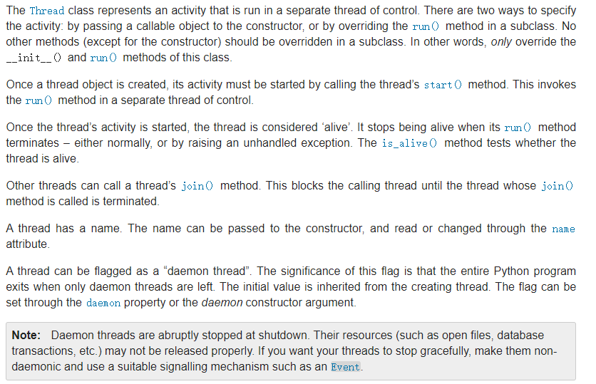
Threading模块的方法：
active_count()：返回当前存活的线程类对象current_thread()： 返回当前对应调用者的控制线程的对象。如果调用者的控制线程不是利用 threading创建，会返回一个功能受限的虚拟线程对象get_ident()：返回当前线程的线程标识符enumerate()：返回所有线程存活对象，与前边的active_count()返回一致main_thread()：返回主线程对象，一般情况下，主线程是Python解释器创建的对象settrace(func)、setprofile(func)、stack_size([size])功能分别为追踪函数、性能测试函数、阻塞函数（一般情况下用不到，二般情况下再考虑）构造函数的关键字：
class Threading.Thread(group=None, target=None, name=None, args=(), kwargs={}, *, daemon=None)
group：默认为None，为了日后扩展ThreadGroup类而保留的target：要调用的方法，如果传入方法名则为其开辟内存空间；相同地，传入方法对象则立即执行name：线程名称，默认以Thread-N命名，N为当前线程数args：参数kwargs：参数的另一种传入方式daemon：守护模式实例化对象的方法：
is_alive()：返回线程是否活动的。一但线程活动开始，该线程就被认定是存活的，如果被t.run()结束或者抛出异常，都被认定为死亡线程；getName()：返回线程名，可以使用setName()来重新命名ident()：线程标识符，如果线程未开始则为None，非零整数。如果一个线程退出的同时另一个线程被创建，则标识符会被复用start()、run()、join(timeout=None)、daemon()、isDaemon以及setDaemonfrom threading import Thread, currentThread, active_count, enumerate
import time
def run(name):
print('%s 正在执行。。。。当前线程名：' % name, currentThread().getName())
time.sleep(2)
print('%s 执行完毕。。。。当前线程名：' % name, currentThread().getName())
if __name__ == '__main__':
t = Thread(target=run, args=('Chancey', ), name="我是可爱的子线程")
t.start()
t.setName("我是酷酷的子线程")
t.join()
print('当前活跃的线程数：', active_count())
print('子线程的名字：', t.getName())
currentThread().setName("我是穷逼")
print('成功修改子线程')
print("查看线程是否存活：", t.is_alive())
print('主线程名字：', currentThread().getName())
t.join()
print("再次join一下")
print("活跃的线程数：", active_count())
print("当前活跃的线程：", enumerate())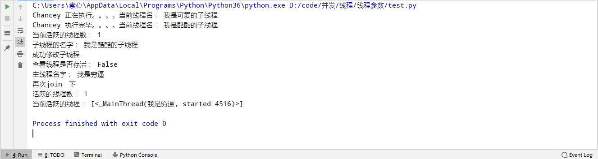
这里也就几个参数，没什么逻辑上比较烧脑的，就不作赘述了
前边在进程并发上讨论的守护进程，这里的守护线程也差不多。
这里切记，运行完毕不是终止运行：
下边就这两个点展开讨论
详细解释一下：对于进程，只要主进程运行完毕就称之为执行完毕，而此刻的守护进程也会被回收，然后主进程就会等待非守护进程运行完毕后才回收所有子进程的资源，这样下来就有效的避免了僵尸进程的产生。
from threading import Thread
import time
def run(name):
print('%s 正在执行。。。。' % name)
time.sleep(2)
print('%s 执行完毕。。。。' % name)
if __name__ == '__main__':
t = Thread(target=run, args=('chancey', ), daemon=True)
t.start()
print('主进程')
print('线程是否存活：', t.is_alive())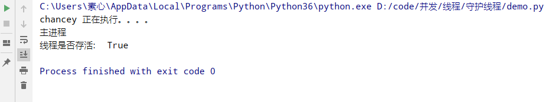
这里可以看到，只打印了sleep之前的信息，这也正是验证了当主线程结束的时候，守护线程也跟着结束，所以就出现了不完全执行的现象。
from threading import Thread
import time
def fun1():
print('方法一开始运行')
time.sleep(1)
print('方法一结束运行')
def fun2():
print('方法二开始运行')
time.sleep(0.5)
print('方法二结束运行')
if __name__ == '__main__':
t1 = Thread(target=fun1, daemon=True)
t2 = Thread(target=fun2, )
t1.start()
t2.start()
print('主进程')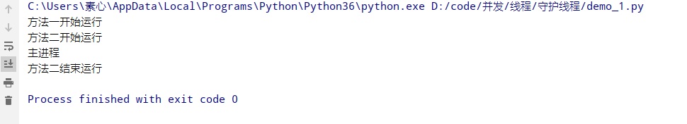
通过运行发现，定义的fun1也是不完全运行，因为在start之前设置了守护线程，当主线程结束的时候，该子线程随之结束，而fun2因为没有设置守护线程，所以会等待非守护线程运行完毕才回收。
由此得出结论（划重点）：
只要是有其他守护线程还没有运行完毕，守护线程就不会被回收，进程只有当非守护线程全部运行完毕才会结束
前边有谈进程的互斥锁，实际上就是将并发的进程变成了串行，从而使的效率大打折扣，但是数据变得安全。
而对于线程来说，一个进程内的所有线程是共享地址空间的，所以在数据上依然乱掉。
from threading import Thread, Lock
import time
n = 100
def fun():
global n
tmp = n
time.sleep(0.1)
n = tmp - 1
if __name__ == '__main__':
start = time.time()
t_list = []
for i in range(100):
t = Thread(target=fun, )
t_list.append(t)
t.start()
for t in t_list:
t.join()
print('主进程', n)
end = time.time()
print(end - start)理论上这里开辟100个线程，分别减n，最终结果为0
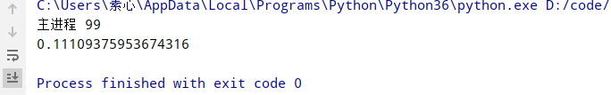
这里变成了99，但是运行效率非常的快，现在为该方法加锁再次运行
from threading import Thread, Lock
import time
n = 100
def fun():
global n
mutex.acquire()
tmp = n
time.sleep(0.1)
n = tmp - 1
mutex.release()
if __name__ == '__main__':
mutex = Lock()
start = time.time()
t_list = []
for i in range(100):
t = Thread(target=fun, )
t_list.append(t)
t.start()
for t in t_list:
t.join()
print('主进程', n)
end = time.time()
print(end - start)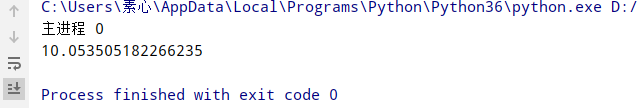
可以看到，这里的数据并没有错乱，但是执行速度由原来的0.1秒变成了现在的10秒，在实际的开发中还需要对症下药。
Python的线程并发有一个特性，就是使用单核，并且同一时刻只有一个线程在执行，这就无法充分的使用多核计算机的资源了。
在线程的并发的时候其实就是几个线程来回折腾，给用户的感觉像是同时进行，本质上是在一个线程进行的时候，Python就会将整个解释器锁掉，从而使得其他线程无法执行，这种机制就是cPython著名的GIL全局解释器锁。
注意：这种机制在jPython中是没有的，所以说，GIL并不是Python的特性。
而将并发变成串行的，有互斥锁，同样的，GIL也是一种互斥锁，只不过GIL保护的是解释器级别的数据，而普通的互斥锁是保护应用程序的数据。
import os
import time
print(os.getcwd())
time.sleep(120)分别在windows和linux运行该代码并查看进程
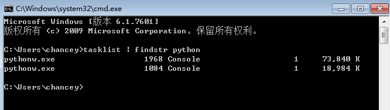
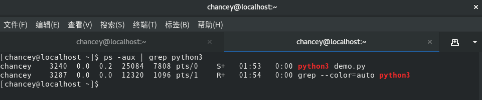
可以看到，在一个Python进程内，不仅有demo文件的线程，还有Python解释器级别的垃圾回收机制的线程在运行。但是所有线程都在同一个进程之内。
如果多个线程的target都是某一个函数，那么这多个线程首先访问解释器的代码，即拿到执行权限，然后把target的代码交予解释器的代码去执行。
在一个进程中，所有数据都是共享的，解释器代码也不例外，所以垃圾回收线程可以通过访问解释器代码而执行，这就直接导致了一个紊乱数据的问题：对于同一个数据100，可能线程1执行x = 100的同时，垃圾回收线程回收100。数据直接乱掉。解决该问题只有加锁处理。
很清楚，锁的目的就是通过降低效率来保证数据的安全，使得在同一时间只能有一个线程修改。
这里需要区分GIL与Lock：
有了GIL的存在，同一时刻同一进程中只有一个线程被执行，进程可以利用多核，但是开销大，而python的多线程开销小，但却无法利用多核优势。
现在的计算机基本上都是多核，python对于计算密集型的任务开多线程的效率并不能带来多大性能上的提升，甚至不如串行(没有大量切换)，但是，对于IO密集型的任务效率还是有显著提升的。
对于选取并发模型上，文章后边会提到
如果多个线程相互争抢资源，任何线程都没有拿到，届时就会相互等待，从而造成堵塞，这种情况的现象就是死锁，如果没有外来的因素，则会一直阻塞下去
from threading import Thread, Lock
import time
mutex1 = Lock()
mutex2 = Lock()
class MyThread(Thread):
def run(self, ):
self.fun1()
self.fun2()
def fun1(self, ):
mutex1.acquire()
print("%s 拿到了1锁" % self.name)
mutex2.acquire()
print('%s 拿到了2锁' % self.name)
mutex2.release()
mutex1.release()
def fun2(self, ):
mutex2.acquire()
print("%s 拿到了2锁" % self.name)
time.sleep(1)
mutex1.acquire()
print("%s 拿到了1锁" % self.name)
mutex1.release()
mutex2.release()
if __name__ == "__main__":
for i in range(10):
t = MyThread()
t.start()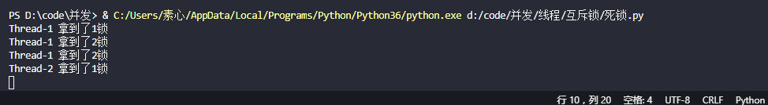
解读一下上边的代码：
由于线程开销极小，所以启动速度非常的快，thread-1拿到1锁之后解锁，此时thread-2还没拿到1锁，而在thread-1拿到2锁的时候，thread-2拿到了2锁，届时，thread-1需要1锁，而thread-2需要2锁，所以在这里就相互等待。
要解决这种情况的出现，就需要一把能够连续acqurie多次，这种锁就是递归锁。
Rlock内部维护了一个Lock和一个count变量，count记录了acquire的次数，从而使得资源可以被多次acquire。直到一个线程的所有acquire都被release之后才允许其他的线程获得资源。更改上边的代码，将lock更换为Rlock
from threading import Thread, RLock
import time
mutex1 = mutex2 = RLock()
class MyThread(Thread):
def run(self, ):
self.fun1()
self.fun2()
def fun1(self, ):
mutex1.acquire()
print("%s 拿到了1锁" % self.name)
mutex2.acquire()
print('%s 拿到了2锁' % self.name)
mutex2.release()
mutex1.release()
def fun2(self, ):
mutex2.acquire()
print("%s 拿到了2锁" % self.name)
time.sleep(1)
mutex1.acquire()
print("%s 拿到了1锁" % self.name)
mutex1.release()
mutex2.release()
if __name__ == "__main__":
for i in range(10):
t = MyThread()
t.start()# 执行结果
Thread-1 拿到了1锁
Thread-1 拿到了2锁
Thread-1 拿到了2锁
Thread-1 拿到了1锁
Thread-2 拿到了1锁
Thread-2 拿到了2锁
Thread-3 拿到了1锁
Thread-3 拿到了2锁
Thread-3 拿到了2锁
Thread-3 拿到了1锁
Thread-5 拿到了1锁
Thread-5 拿到了2锁
Thread-5 拿到了2锁
Thread-5 拿到了1锁
Thread-7 拿到了1锁
Thread-7 拿到了2锁
Thread-7 拿到了2锁
Thread-7 拿到了1锁
Thread-9 拿到了1锁
Thread-9 拿到了2锁
Thread-9 拿到了2锁
Thread-9 拿到了1锁
Thread-2 拿到了2锁
Thread-2 拿到了1锁
Thread-4 拿到了1锁
Thread-4 拿到了2锁
Thread-4 拿到了2锁
Thread-4 拿到了1锁
Thread-8 拿到了1锁
Thread-8 拿到了2锁
Thread-8 拿到了2锁
Thread-8 拿到了1锁
Thread-6 拿到了1锁
Thread-6 拿到了2锁
Thread-6 拿到了2锁
Thread-6 拿到了1锁
Thread-10 拿到了1锁
Thread-10 拿到了2锁
Thread-10 拿到了2锁
Thread-10 拿到了1锁
PS D:\code\并发>可以看到这里并没有发生永久性的阻塞，这就是递归锁的使用
如果一把锁将程序的执行效率变得非常慢，就可以在这里设置同一把锁让多个线程同时拿去执行任务，这个参数就是信号量。而指定的大小就是同时拿锁的线程数量。
这是计算机科学史上最古老的同步原语之一，计数器的值一定是大于零，它会因acquire()的调用而递减1，当acquire()发现值为0时就阻塞，直到其他线程调用release()
创建
class Threading.Semaphore(value=1)： 可选参数 value 赋予内部计数器初始值，默认值为 1 。如果 value 被赋予小于0的值，将会引发 ValueError异常。
对象属性
acquire(blocking=True, timeout=None)：获取一个信号量，blocking为false时不会阻塞,timeout为阻塞延时
release()：释放信号量
from threading import Thread, Semaphore, currentThread
import time
import random
sem = Semaphore(3) # 设置信号量大小为3
def fun():
sem.acquire()
print('%s 执行' % currentThread().getName())
sem.release()
time.sleep(random.randint(1, 2))
if __name__ == "__main__":
for i in range(5):
t = Thread(target=fun, )
t.start()执行过程中可以发现，线程1，2，3同时执行，之后才加入4，5
一个线程发出事件信号，而其他线程等待该信号，这也是线程之间最简单的通信方式之一。
一个事件对象管理一个内部标志，调用set()可以将其设置为True，而设置为False则使用clear，调用wait()方法将会进入阻塞，直到标志为True。
关键字
class threading.Event
对象属性
is_set()：当且仅当内部标志为True时返回True
set()：将内部标志设置为True。这时所有等待该事件线程将会被唤醒，并且当标志为true的时候调用wait()不会阻塞
clear()：将内部标志设置为False。这时调用wait()将会被阻塞，一直等待调用set()
wait(timeout=None)：一直阻塞线程，直到内部变量为True。如果调用set()则立即返回。否则一直阻塞或者到达timeout时间。这里的timeout是一个浮点数。很明显，wait()返回的值一直是None。
以连接数据库为例：
现在管理一堆线程去连接数据库，但是必须有一个线程先去尝试连接，测试数据库Server是否正常活动，这就用到了事件信号，即Event()来协调各个线程之间的工作。
from threading import Thread, Event, currentThread
import time
event = Event()
def connect():
n = 0
while not event.is_set():
if n == 3:
print('%s 连接超时。。。' % currentThread().getName)
return
print('%s 尝试连接 <%s>'% (currentThread().getName, n))
event.wait(0.5)
n += 1
print('%s 已连接' %currentThread().getName)
def check():
print('%s 可以正常连接了'% currentThread().getName)
time.sleep(2)
event.set()
if __name__ == "__main__":
for i in range(3):
t = Thread(target=connect)
t.start()
t = Thread(target=check)
t.start()<bound method Thread.getName of <Thread(Thread-1, started 5852)>> 尝试连接 <0>
<bound method Thread.getName of <Thread(Thread-2, started 5196)>> 尝试连接 <0>
<bound method Thread.getName of <Thread(Thread-3, started 3012)>> 尝试连接 <0>
<bound method Thread.getName of <Thread(Thread-4, started 8744)>> 可以正常连接了
<bound method Thread.getName of <Thread(Thread-1, started 5852)>> 尝试连接 <1>
<bound method Thread.getName of <Thread(Thread-2, started 5196)>> 尝试连接 <1>
<bound method Thread.getName of <Thread(Thread-3, started 3012)>> 尝试连接 <1>
<bound method Thread.getName of <Thread(Thread-2, started 5196)>> 尝试连接 <2>
<bound method Thread.getName of <Thread(Thread-1, started 5852)>> 尝试连接 <2>
<bound method Thread.getName of <Thread(Thread-3, started 3012)>> 尝试连接 <2>
<bound method Thread.getName of <Thread(Thread-2, started 5196)>> 连接超时。。。
<bound method Thread.getName of <Thread(Thread-1, started 5852)>> 连接超时。。。
<bound method Thread.getName of <Thread(Thread-3, started 3012)>> 连接超时。。。顾名思义，就是在等待N秒时候执行某操作
对象创建
class Threading.Timer(interval, function, args=None, kwargs=None)：创建一个定时器，在经过interval秒之后，就是用args和kwargs参数调用function
对象属性
cancel()：停止计时器，并取消当前执行的操作。只有计时器处于等待状态下才有效
from threading import Timer
def demo(name):
print('%s 说：hello' % name)
t = Timer(1, demo, args=('chancey', ))
t.start()非常的简单，就是等待某一段时间
from threading import Timer
import random
class Code:
def __init__(self):
self.make_cache()
def make_cache(self, interval=10):
self.cache = self.make_code()
print('\n', self.cache)
self.t = Timer(interval, self.make_cache)
self.t.start()
def make_code(self, n=4):
res = ''
for i in range(n):
s1 = str(random.randint(0, 9)) # 随机取出ASCII表里面数字，并转为字符，方便后面拼接
s2 = chr(random.randint(65, 90)) # 随机取出ASCII表中大小写字母
res += random.choice([s1, s2])
return res
def check(self):
while True:
code = input('请输入你的验证码>>: ').strip()
if code.upper() == self.cache:
print('验证码输入正确')
self.t.cancel()
break
obj = Code()
obj.check()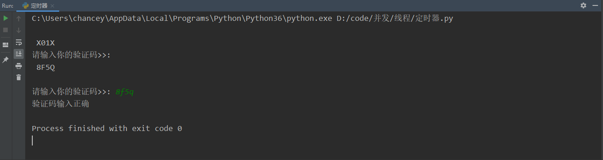
可以看到这里在等待10秒之后刷新验证码
在Python 3.2 以上版本中还添加了栅栏对象。略作了解即可，在实际项目中并不常用，反正我做了两年爬虫一次都没用过。
当固定数量的线程需要彼此相互等待时就需要用到栅栏类。线程调用wait()方法后将会阻塞，一直阻塞到所有的线程都调用wait()方法，届时所有的线程都将被释放。
创建对象
class threading.Barrier(parties, action=None, timeout=None)
parties：线程的数量，值为几就有几个该线程的栅栏对象action：可调用对象，它会在所有的线程被释放的时候在其中的一个线程中自动调用timeout：超时时间对象属性
wait(timeout=None)：冲出栅栏。当所有的线程都被调用了wait()方法就会被统一释放，这里的timeout参数优先于创建对象的timeout参数reset()：重置栅栏为默认的初始状态。如果栅栏中仍有等待释放的线程，将会引发异常abort()：损坏栅栏。如果正好有需要调用wait()方法的线程，则会引发BrokenPipeError异常，如果需要终止某个线程，可以调用该方法来避免死锁。不过最好在创建栅栏的时候指定超时时间实例：模拟开门，假设只有当人数达到3人的时候开门
from threading import Thread, Barrier
def open():
print('人数够了，开门')
barrier = Barrier(parties=3, action=open)
class Game(Thread):
def __init__(self, *args, **kwargs):
super().__init__(*args, **kwargs)
self.n = 3
def run(self):
while self.n > 0:
self.n -= 1
print('%s 正在等待开门' % self.name)
try:
barrier.wait(timeout=2)
except BrokenPipeError:
pass
print('已开门')
if __name__ == '__main__':
names = ['Chancey', 'Waller', 'Mary']
for i in range(3):
t = Game(name=names[i])
t.start()C:\Users\chancey\AppData\Local\Programs\Python\Python36\python.exe D:/code/并发/线程/event介绍/栅栏对象.py
Chancey 正在等待开门
Waller 正在等待开门
Mary 正在等待开门
人数够了，开门
已开门
已开门
Chancey 正在等待开门
已开门
Mary 正在等待开门
Waller 正在等待开门
人数够了，开门
已开门
已开门
Chancey 正在等待开门
已开门
Mary 正在等待开门
Waller 正在等待开门
人数够了，开门
已开门
已开门
已开门
Process finished with exit code 0在线程中队列的方法有三种
QueueLifoQueuePriorityQueue上述三种方法里面，Queue的方法在进程并发中已经详细做了介绍，这里就不赘述了，而后边的LifoQueue和PriorityQueue的对象属性和Queue是一样的，他们之间都是通用的，像什么qsize()、empty()、put()、get()都是通用的
在线程中的Queue的用法和进程中的使用方法一样，而在线程中正是人们口中经常说的先进先出。
其实很好理解，就是先进去队列的对象先行出来，引用方法名就是先put()进去的先get()出来。
import queue
q = queue.Queue(3)
q_list = []
for i in range(3):
q.put(i)
q_list.append(q)
for q in q_list:
print(q.get())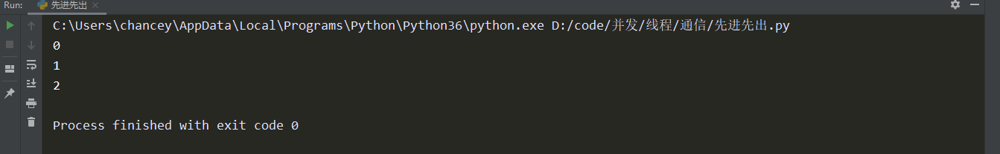
与Queue正好相反，它是先进后出，这也就是著名的堆栈
还是上边代码稍作改动
import queue
q = queue.LifoQueue(3)
q_list = []
for i in range(3):
q.put(i)
q_list.append(q)
for q in q_list:
print(q.get())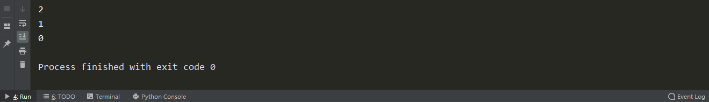
指定优先级，put()方法使用一样，指定优先级即可
import queue
q = queue.PriorityQueue(3)
q1 = q.put((2, 'Chancey'))
q2 = q.put((3, 'Waller'))
q3 = q.put((1, 'Mary'))
print(q.get())
print(q.get())
print(q.get())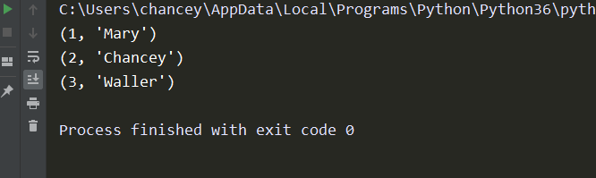
可以看到mary是最后入队列的，但是其优先级高于所有，所以先行出队列。
判断优先级是看值的大小，值越小优先级就越高咯，灰常滴简单
对于线程池和进程池的构造和使用，在Python中也处于一种比较高阶的技术。这里会着重讲解并发池的使用以及注意事项
如果一个项目里面只需要开启几个或者几十个进程，就可用Process手动创建或者for循环创建，但是如果进程量很高呢，这就用到了进程池，它可以减少进程创建和释放的开销，极大的降低了计算机资源的浪费。
举个例子：早上洗脸，如果水一滴滴的落在脸上洗脸，是不是很慢？而找个盆子把水装起来洗脸就会方便很多，进程池也一样，就是将诸多的进程装进容器，等待调用。
进程池，顾名思义，一种特殊的容器，用来存储进程，而在进程数量的选择上，并不是越多越好，应该综合计算机软硬件的条件来设置。
特点：非常清楚，一个进程创建和销毁是需要大量的时间和计算机资源，如果有十万个进程在这里重复的开辟内存空间、释放内存，那这个计算机估计濒临灭亡（我指的是普通的家用计算机，高性能服务器自行测试），而有了进程池，假设进程池限制3个进程，那么在运行的时候，只创建3个进程，然后循环利用，最后统一回收。所以说，进程池可以极大的减少计算机资源的浪费。
对象创建
multiprocessing.Pool(processes)
processes：允许入池的最大进程数对象属性
apply()：传递不定参数，主进程会被阻塞直到函数执行结束，在Python以后已经没有了该方法apply_async()：与上述apply()一样，但是非阻塞，且支持结果返回进行回调map(func, iterable[, chunksize=None])：与内置的map函数用法行为基本一致，它会使进程阻塞直到返回结果。注意，虽然第二个参数是一个迭代器，但在实际使用中，必须在整个队列都就绪后，程序才会运行子进程close()：关闭进程池terminate()：结束进程池，未处理的任务也不会再处理join()：主进程阻塞等待子进程退出，该方法必须在close()或者terminate()之后import multiprocessing
import time
import os
import random
def hello(name):
start = time.time()
print('%s 开始执行，进程号：%s' % (name, os.getpid()))
time.sleep(random.random()*2)
end = time.time()
print('%s 结束执行，进程号：%s，耗时%0.2fS' % (name, os.getpid(), end-start))
if __name__ == '__main__':
p = multiprocessing.Pool()
for i in range(4):
p.apply_async(hello, (i, ))
print('*'*30, '程序开始', '*'*30)
p.close()
p.join()
print('*'*30, '程序结束', '*'*30)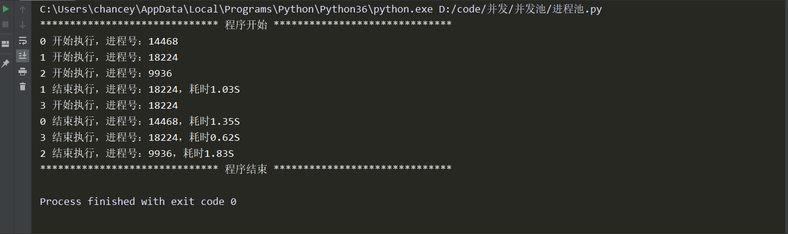
可以清楚的看到，同时进行的只有3个进程，而且在进程池中的某一个进程处理完任务后不会回收，而是新入池一个任务继续进行，知道所有的任务执行完毕，进程才统一回收。
线程池的创建有三种方式
threadpoolconcurrent.futures该方法也可用来创建进程池，后边会做介绍threadpool或者concurrent.futures.ThreadPoolExecutor这里只介绍第一种，后边会详细介绍concurrent.futures来创建
在python 2.7 以上包括Python 3.x ，支持第三方库threadpool
注意：该库现已停止官方支持，仅作为旧项目的支持
网上对于
threadpool的介绍少之又少，作为从来规矩上网的我，官方文档怎么也看不明白，所以就剖其源码研究了一番
源码介绍：
"""Easy to use object-oriented thread pool framework.
A thread pool is an object that maintains a pool of worker threads to perform
time consuming operations in parallel. It assigns jobs to the threads
by putting them in a work request queue, where they are picked up by the
next available thread. This then performs the requested operation in the
background and puts the results in another queue.
The thread pool object can then collect the results from all threads from
this queue as soon as they become available or after all threads have
finished their work. It's also possible, to define callbacks to handle
each result as it comes in.
The basic concept and some code was taken from the book "Python in a Nutshell,
2nd edition" by Alex Martelli, O'Reilly 2006, ISBN 0-596-10046-9, from section
14.5 "Threaded Program Architecture". I wrapped the main program logic in the
ThreadPool class, added the WorkRequest class and the callback system and
tweaked the code here and there. Kudos also to Florent Aide for the exception
handling mechanism.
Basic usage::
>>> pool = ThreadPool(poolsize)
>>> requests = makeRequests(some_callable, list_of_args, callback)
>>> [pool.putRequest(req) for req in requests]
>>> pool.wait()
See the end of the module code for a brief, annotated usage example.
Website : http://chrisarndt.de/projects/threadpool/
"""大致意思就是介绍了该库的运行原理，和基本用法，就是Basic usage的内容
pool = ThreadPool(poolsize)
requests = makeRequests(some_callable, list_of_args, callback)
[pool.putRequest(req) for req in requests]
pool.wait()分行解释代码：
定义线程池，参数为最大的线程数
调用makeRequests()创建了要开启多线程的函数或者方法，后边的list_of_args为该函数的参数，默认为None，callback为回调函数。也就是说，只需要两个参数即可开启
将线程扔进线程池。等同于
for item in requests:
pool.putRequest(item)等待所有的线程完成任务后退出
import threadpool
import time
def hello(name):
print('%s 说 hello' % name)
time.sleep(1)
print('%s 说 bye' % name)
if __name__ == '__main__':
names = ['Chancey', 'Wanger', 'Mary', 'Alex', 'Guido']
start = time.time()
pool = threadpool.ThreadPool(3)
requests = threadpool.makeRequests(hello, names)
[pool.putRequest(req) for req in requests]
pool.wait()
print('总共耗时：%0.2f' % (time.time() - start))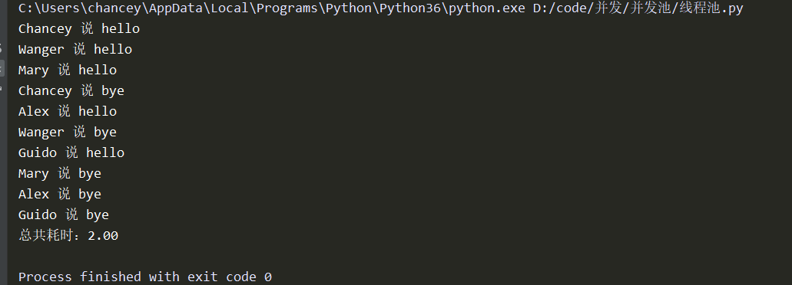
如果开启多线程的函数有比较多的参数的话，函数调用时第一个解包list，然后解包dict。这样的话就两种方法传参，一种是列表，一种字典。
# 多个参数
import threadpool
import time
def counts(a, b, c):
print('%d+%d+%d=%d' % (a, b, c, a+b+c))
time.sleep(2)
if __name__ == '__main__':
# 构造参数
number_one = [1, 2 ,3]
number_two = [4, 5, 6]
number_three = [7, 8, 9]
params = [(number_one, None), (number_two, None), (number_three, None)]
# 创建线程池
start = time.time()
pool = threadpool.ThreadPool(2)
requests = threadpool.makeRequests(counts, params)
[pool.putRequest(req) for req in requests]
pool.wait()
print('总共耗时%0.2f' % (time.time() - start))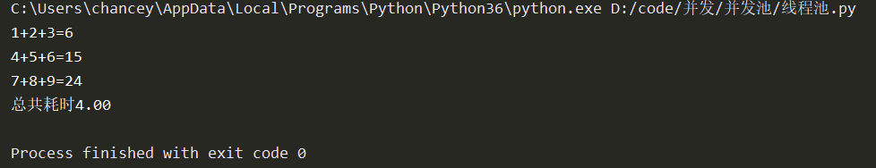
# 多个参数
import threadpool
import time
def counts(a, b, c):
print('%d+%d+%d=%d' % (a, b, c, a+b+c))
time.sleep(2)
if __name__ == '__main__':
# 构造参数
number_one = {'a':1, 'b':2, 'c':3}
number_two = {'a':4, 'b':5, 'c':6}
number_three = {'a':7, 'b':8, 'c':9}
params = [(None, number_one), (None, number_two), (None, number_three)]
# 创建线程池
start = time.time()
pool = threadpool.ThreadPool(2)
requests = threadpool.makeRequests(counts, params)
[pool.putRequest(req) for req in requests]
pool.wait()
print('总共耗时%0.2f' % (time.time() - start))依旧可以完美运行
不过
threadpool并不建议在新项目中使用，官方是这样声明的：This module is OBSOLETE and is only provided on PyPI to support old projects that still use it. Please DO NOT USE IT FOR NEW PROJECTS!
该模块已经过时，但仍在PyPi中提供，以支持仍然使用它的旧项目。请勿用于新项目！
这里命名并发池是我自己想的，因为concurrent支持多进程和多线程。这里也将是本文的亮点。
该模块是Python3自带包，而Python2.7以上也可安装使用。concurrent包下只有一个模块futures，模块下最常用的就是Executor类，它下边有两个子类，分别是ThreadPoolExecutor和ProcessPoolExecutor，顾名思义，分别支持多线程和多进程。
ThreadPoolExecutor该类专为多线程提供支持
创建对象
class concurrent.futures.ThreadPoolExecutor(max_workers=None, mp_context=None, initializer=None, initargs=())
max_workes：指定线程数。在Python 3.5 以上的版本中，为None或者没有指定的时候开启和计算机CPU相同数量的线程，并且在Windows上必须小于61，附上源码
if max_workers is None:
# Use this number because ThreadPoolExecutor is often
# used to overlap I/O instead of CPU work.
max_workers = (os.cpu_count() or 1) * 5
if max_workers <= 0:
raise ValueError("max_workers must be greater than 0")map_context：允许用户控制由进程池创建给工作者进程的开始方法
initializer和initargs：在每个工作者线程开始处调用的一个可选可调用对象。 initargs 是传递给初始化器的元组参数。任何向池提交更多工作的尝试， initializer 都将引发一个异常，当前所有等待的工作都会引发一个 BrokenThreadPool。该功能在python 3.8 版本以上提供
对象属性
抽象类提供异步执行调用方法。要通过它的子类调用，而不是直接调用。
注意：下边介绍的对象方法是通用的
submit(fn, *args, **kwargs)：异步提交，传参的方式依旧是元组map(func, *iterables, timeout=None, chunksize=1))：类似于 map()，也就是将submit() for循环了
shutdown(wait=True)：类似于进程池中的pool.close()和pool.join()的结合体。当wait为True时等待池子内所有任务完毕后释放，反之亦然，默认为True。注意：不论wait为何值，整个程序都会等到所有任务执行完毕
result(timeout=None)：获取结果
add_done_callback(fn)：回调函数
from concurrent.futures import ThreadPoolExecutor
import os
import time
def say(name):
print('%s 说 hello，我的PID：%s' % (name, os.getpid()))
time.sleep(2)
print('%s 说 bye，我的PID：%s' % (name, os.getpid()))
if __name__ == '__main__':
pool = ThreadPoolExecutor(2)
names = ['Chancey', 'Wanger', 'SuXin', 'Mark', 'Alex']
start = time.time()
for i in names:
pool.submit(say, i)
pool.shutdown(wait=True)
print('耗时：%0.2f' % (time.time() - start))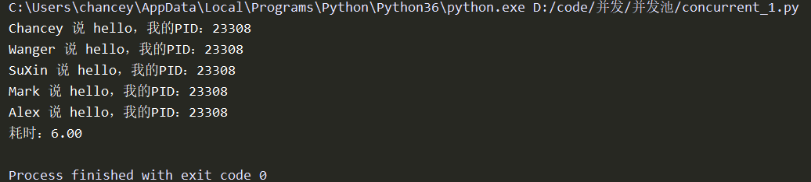
ProcessPoolExecutor用法相同，不再赘述。只不过换成ProcessPoolExecutor，里面所有创建对象和对象方法都是一样的。
任务提交有两种方式：
前边在介绍ThreadPoolExecutor或者ProcessPoolExecutor时提到了add_done_callback(fn)，这个就是回调机制。异步调用和回调机制都是提交任务的方式。
以爬虫的方式写一下提交任务的方式
说明：这里构造两个函数，一个负责构造URL，一个负责爬取数据
先看一下同步提交的方式：
from concurrent.futures import ThreadPoolExecutor
import time
def get_url(keyword):
url = 'https://www.suxin.site/%s' % keyword
time.sleep(1)
print('%s URL构造成功' % keyword)
return url
def get_html(url):
html = '<html>%s</html>' % url
time.sleep(2)
print('%s HTML获取成功' % url)
return html
if __name__ == '__main__':
pool = ThreadPoolExecutor(2)
keyword_list = ['Chancey', 'Wanger', 'SuXin', 'Mark', 'Alex']
start = time.time()
for keyword in keyword_list:
msg = pool.submit(get_url, keyword).result()
get_html(msg)
pool.shutdown(wait=True)
print('耗时：%0.2f' % (time.time() - start))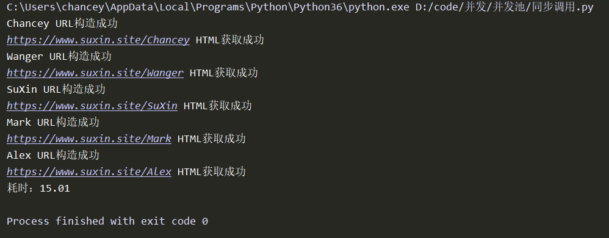
再看下异步提交
from concurrent.futures import ThreadPoolExecutor
import time
def get_url(keyword):
url = 'https://www.suxin.site/%s' % keyword
time.sleep(1)
print('%s URL构造成功' % keyword)
return url
def get_html(url):
url = url.result()
html = '<html>%s</html>' % url
time.sleep(2)
print('%s HTML获取成功' % url)
return html
if __name__ == '__main__':
pool = ThreadPoolExecutor(2)
keyword_list = ['Chancey', 'Wanger', 'SuXin', 'Mark', 'Alex']
start = time.time()
for keyword in keyword_list:
pool.submit(get_url, keyword).add_done_callback(get_html)
pool.shutdown(wait=True)
print('耗时：%0.2f' % (time.time() - start))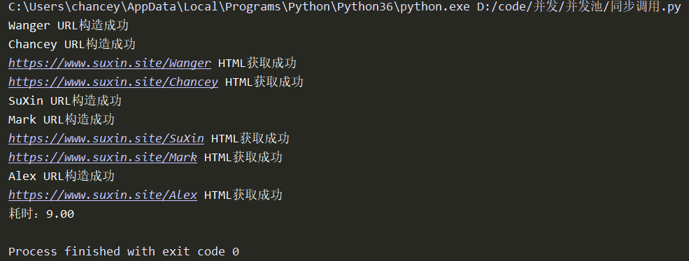
效率一目了然
本来这里是打算将concurrent.fautres单独拿出来说一说，但是发现本文已经够长了，所以在下篇详细讨论如何重写ThreadPoolExecutor
前边的线程池中有讲到可以通过重写concurrent或者fautres来使用并发池，这里需要详细的了解源码以及运行原理，建议对current源码有研究的朋友们可以琢磨一下，考虑到篇幅这里就不说了。
网络上对自构并发池大多千篇一律，然并卵，所以这里介绍一下，不过上边的方法已经足够了项目的使用，极特别的需求可能用到，有兴趣可以看看，没兴趣的直接跳到协程去看。
python里面的Queue类似于并发，可以说是低配版的并发
大致的思路就这些，接下来就是精彩的代码，里面有详细的注释，不必慌
import threading
import time
import queue
stop = object() # 这个是用来标志任务停止
class ThreadPoolChancey(object):
def __init__(self, max_thread=None):
self.queue = queue.Queue() # 创建的队列可以放无限制的任务
self.max_thread = max_thread # 指定的最大线程数，默认为None
self.terminal = False # 停止标志
self.create_thread_list = [] # 真实创建的线程数，这里以列表的方式存储，方便判断线程数量
self.free_thread_list = [] # 空闲线程数
def run(self, function, args, callback=None):
'''
:param function : 执行函数
:param args : 要执行的函数的参数，定义为元组传参
:param callback : 回调函数，T or F 的返回值
:return :
'''
# 判断是否创建真实线程
if len(self.free_thread_list) == 0 and len(self.create_thread_list) < self.max_thread: # 如果空闲线程为0并且创建的真实线程没有达到最大限度就创建
self.create_thread()
task = (function, args, callback)
self.queue.put(task)
def callback(self):
'''回调函数：用以循环获取任务并执行'''
current_thread = threading.current_thread() # 获取当前线程
self.create_thread_list.append(current_thread) # 添加到线程列表里面
event = self.queue.get() # 获取一个任务并执行
while event != stop: # 用以判断是否终止任务
function, args, callback = event # 解开任务包，该包包含了执行函数、参数、回调函数
try: # 执行函数运行的结果，该判断执行成功，故状态为True
message = function(*args)
state = True
except Exception as err: # 执行异常，状态为False
message = err
state = False
if callback is not None: # 不为空则表示执行完毕
try:
callback(state, message) # 执行回调函数
except Exception as err:
print(err) # 抛出异常
else:
pass
if not self.terminal:
self.free_thread_list.append(current_thread) # 有终止任务的时候就添加一个新任务
event = self.queue.get()
self.free_thread_list.remove(current_thread) # 这里添加了任务，线程有一个占用，剔除空闲
else:
event = stop # 停止put
else:
self.create_thread_list.remove(current_thread) # 剔除执行完毕的任务
def create_thread(self):
'''创建线程'''
t = threading.Thread(target=self.callback, )
t.start()
def terminal(self):
'''终止任务，无论队列是否还有任务'''
self.terminal = True
def close(self) :
'''关闭线程池'''
num = len(self.create_thread_list) # 将真实的线程全部添加进线程池
self.queue.empty()
while num:
self.queue.put(stop)
num -= 1
将其放置在同级目录下并作为第三方模块导入试用一下：
这里模拟连接数据库示例
from DiyThreadPool import ThreadPoolChancey
import time
import random
def connect(name):
db = random.randint(10, 20)
time.sleep(1)
print('%s 连接到了数据库%s' % (name, db))
return db
pool = ThreadPoolChancey(2)
name_list = ['Chancey', 'Wanger', 'SuXin', 'Mark', 'Alex']
for name in name_list:
pool.run(function=connect, args=(name, ))
# pool.terminal()
pool.close()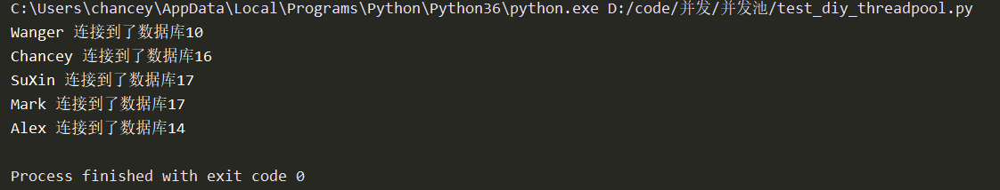
协程，又叫微线程或者纤程。它是比线程更为细小的线程，微线程的名字由此得来。只支持python 3.4以上的版本，不过建议使用python 3.6版本，因为我的代码都是跑在3.6上的，出错找都找不见报错原因
优点：
缺点：
一般情况下，实现协程并发有三种方式
yield(简单协程)
gevent(第三方库)
伟大的Scrapy框架就是基于asycio做了异步IO框架，而下载器是多线程的，所以以后千万不要说scrapy是多线程框架，虽然感觉没什么毛病，但总有刁难的人死钻牛角尖。
这里会介绍两种方式并行执行，不过我个人更喜欢使用
gevent第三方库，使用更加方便，理解也比较容易
yield学过Python基础的朋友们都知道，函数的返回值有两种方式，一种是最常用的return，还有一种是yeild，虽然它是起到挂起的作用，但是依旧能返回值。
基本思路就是创建生成器然后获取生成器并执行
import time
def func1():
while True:
print('正在执行 func1')
yield
time.sleep(1)
def func2():
while True:
print('正在执行 func2')
yield
time.sleep(1)
if __name__ == '__main__':
f1 = func1()
f2 = func2()
while True:
next(f1)
next(f2)这就是最为简单的协程的实现，异步IO的实现
在不开启线程的基础上，实现多个任务，协程是一个特殊的生成器
实现过程：
asyncio在实际的开发中，为了实现更高的并发有很多的方案，比如多进程、多线程。但是无论是多进程还是多线程，IO的调度更多的取决于操作系统，而协程的方式，其调度确是来自于用户，用户在函数中yield一个状态。使用协程可以实现高效的并发任务。
最简单的示例
import asyncio
import time
async def say(name):
print('%s 开始执行' % name)
time.sleep(2)
print('%s 执行完毕' % name)
loop = asyncio.get_event_loop()
loop.run_until_complete(say('chancey'))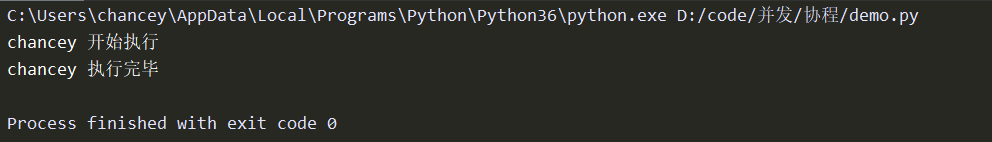
接下来详细介绍一下它的使用
基本流程
async定义一个协程对象loop，由loop在适当的时候调用asycio.get_event_loop创建一个事件循环run_until_complete注册协程到事件循环并启动协程对象在注册到循环事件的时候，也就是在调用run_until_complete之后将协程对象打包成一个任务对象。所谓的任务对象其本质就是一个Future类的子类。它会保存运行后的状态，用于获取该协程执行的结果。
介绍一下常用的方法：
event_loop：事件循环。开启一个事件循环，只需要将函数注册到事件循环，在条件满足的时候调用coroutione：协程对象，使用关键字async声明的函数不会立即执行，而是返回一个协程对象。协程对象就是原生可以挂起的函数task：任务对象。将协程对象进一步封装，就变成了任务，它包含各种任务的状态future：任务结果。不管是将来执行还是没有执行的任务，它都代表这个任务的结果。和task并没有本质上的区别async/await：关键字。前者用于定义一个协程，后者用于挂起阻塞的异步调用import asyncio
import time
# 使用关键字修饰对象，则这个对象就变成了协程对象
async def say(name):
print('%s 开始执行' % name)
time.sleep(2)
print('%s 执行完毕' % name)
now = lambda : time.time()
start = now()
# 创建协程对象
result = say('Chancey')
# 创建事件循环
loop = asyncio.get_event_loop()
# 创建任务对象，生成任务包
task = loop.create_task(result)
print(task)
# 注册协程对象到事件循环，并执行
loop.run_until_complete(task)
print(task)
print('耗时：%0.2f' % (now() - start))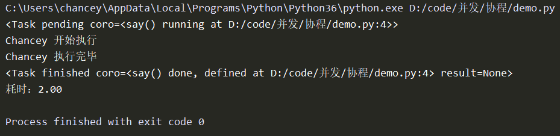
可以看到，在get_event_loop之后，在加入事件循环之前处于pending状态，在run_until_complete之后，其状态变成了finished。
创建协程对象如果用gather的话，后边await的返回值就是协程对象的执行结果，这里提一下，后边详细探讨。
上边的代码task还可以通过
asyncio.ensure_future(coroutine)来创建，run_until_complete参数就是future对象，在传入协程之后封装成task，而task是future的子类，可以使用inistance函数检验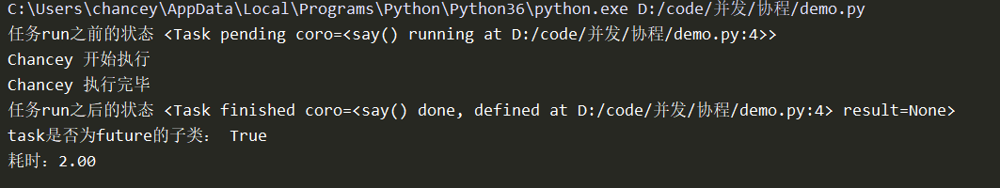
获取协程对象的执行结果有两种方法，一种是通过回调获取，一种是直接result。
在task执行完毕后可以获取结果，回调的最后一个参数为future对象，可以通过这个对象来获取协程的返回值，这也就是协程里面常说的绑定回调
import asyncio
import time
async def say(name):
print('%s 开始执行' % name)
time.sleep(2)
print('%s 执行完毕' % name)
return '%s 已执行完毕' % name
def callback(future):
print('callback：', future.result())
now = lambda : time.time()
start = now()
result = say('chancey')
loop = asyncio.get_event_loop() # 事件循环
task = asyncio.ensure_future(result) # 打包任务
task.add_done_callback(callback) # 回调函数
loop.run_until_complete(task)
print('耗时：%0.2f' % (now() - start))
# 执行结果
chancey 开始执行
chancey 执行完毕
callback： chancey 已执行完毕
耗时：2.00但是如果回调需要多个参数的话怎么办？学过python基础的都知道，偏函数正好能解决该类问题。将future作为固定参数，极大的减少了编程成本，也非常好的遵循了DRY原则。
假设上述代码中的callback函数需要再传入一个时间参数，就可以这么做
from functools import partial
import asyncio
import time
async def say(name):
print('%s 开始执行' % name)
time.sleep(2)
print('%s 执行完毕' % name)
return '%s 已执行完毕' % name
def callback(now, future):
print('callback：%s, 当前时间：%s' % (future.result(), now))
now = lambda : time.time()
start = now()
result = say('chancey')
loop = asyncio.get_event_loop()
task = asyncio.ensure_future(result)
task.add_done_callback(partial(callback, time.ctime()))
loop.run_until_complete(task)
print('耗时：%0.2f' % (now() - start))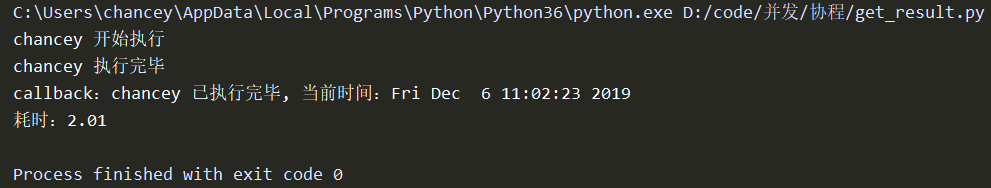
将task调用result方法即可
import asyncio
import time
async def say(name):
print('%s start' % name)
time.sleep(1)
print('%s end' % name)
return name
# 创建协程对象
coroutine = say('Chancey')
# 创建事件循环
loop = asyncio.get_event_loop()
# 创建任务对象
task = loop.create_task(coroutine)
# 注册任务对象到事件循环
loop.run_until_complete(task)
print(task.result())当某个协程在执行开销较大或者耗时的IO操作时，进入阻塞，届时使用await即可将函数挂起，类似于函数中yeild的功能，只有这样，同步的IO操作也就异步化了
import asyncio
import time
async def say(name):
print('%s 开始执行' % name)
await asyncio.sleep(2)
print('%s 执行完毕' % name)
now = lambda : time.time()
start = now()
coroutine = say('Chancey')
loop = asyncio.get_event_loop()
task = loop.create_task(coroutine)
loop.run_until_complete(task)
print('耗时：%0.2f' % (now() - start))单协程貌似也看不出来什么，下边在探讨并发协程的时候效果就明显了
同样的，协程并发和并行也是有区别的，同文章开头的介绍，接下来创建多个协程
import asyncio
import time
async def say(name, hour):
print('%s 等待%d秒'% (name, hour))
await asyncio.sleep(hour)
name_list = ['Chancey', 'Wanger', 'Mary', 'SuXin']
now = lambda : time.time()
start = now()
# 创建协程对象
coroutine_list = []
for i in range(1, 5):
name = name_list[i - 1]
hour = i
coroutine_list.append(say(name=name, hour=hour))
# 创建事件循环
loop = asyncio.get_event_loop()
# 创建任务对象
task_list = []
for item in coroutine_list:
task_list.append(loop.create_task(item))
# 注册任务对象
for task in task_list:
loop.run_until_complete(task)
print('耗时：%0.2f' % (now() - start))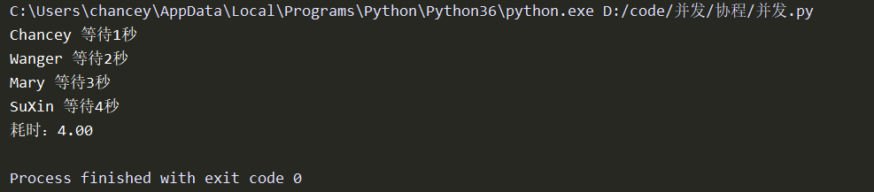
如果单协程就应该是耗时1+2+3+4=10秒，这里做了异步化，所以在遇到阻塞的时候挂起去执行其他的任务，因而在阻塞4秒的时候足够其他的协程执行，所以仅仅耗时4秒
在一般的爬虫中，涉及的IO操作诸多，从网络请求到磁盘写入数据，都是需要大量的时间成本，那么，如果封装大量的IO操作过程，就会非常明显的提高效率，这个方式就是协程嵌套，可以通过在一个协程中await其他协程来实现嵌套
以获取执行结果为例：
import asyncio
import time
async def wait(name, hour):
print('%s 延时 %d秒' % (name, hour))
await asyncio.sleep(hour)
return '%s 执行完成' % name
async def run():
name_list = ['Chancey', 'Wanger', 'SuXin', 'Zxx']
# 封装协程对象的列表
coroutine_list = []
for hour in range(1, 5):
coroutine_list.append(wait(name=name_list[hour - 1], hour=hour))
# 封装任务对象列表
task_list = []
for coroutine in coroutine_list:
task_list.append(asyncio.ensure_future(coroutine))
# 获取协程对象的执行结果，一下的代码会有改动
dones, pendings = await asyncio.wait(task_list) # 这里返回一个元组，dones是返回的执行结果
for task in dones:
print('执行结果：', task.result())
# 把run协程对象添加到事件循环中
if __name__ == '__main__':
now = lambda : time.time()
start = now()
loop = asyncio.get_event_loop()
loop.run_until_complete(run())
print('耗时：%0.2f' % (now() - start))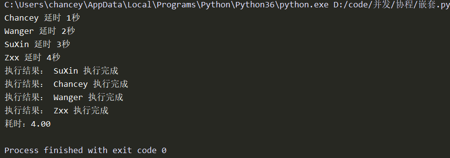
前边有提到使用gather创建协程对象，那么，await的返回值就是协程对象运行的结果，对上述代码稍微改动
results = await asyncio.gather(*task_list)
for result in results:
print('执行结果：', result)不仅如此，不在run函数里面处理结果，直接返回await的内容，那么最外层的run_until_complete将会返回run协程的结果，也就说，现在不在协程对象中获取执行结果了，而是在事件循环中获取
import asyncio
import time
async def wait(name, hour):
print('%s 延时 %d秒' % (name, hour))
await asyncio.sleep(hour)
return '%s 执行完成' % name
async def run():
name_list = ['Chancey', 'Wanger', 'SuXin', 'Zxx']
# 封装协程对象列表
coroutine_list = []
for hour in range(1, 5):
coroutine_list.append(wait(name=name_list[hour-1], hour=hour))
# 封装任务对象列表
task_list = []
for coroutine in coroutine_list:
task_list.append(asyncio.gather(coroutine))
# asyncio.gather返回的是一个元组
return await asyncio.gather(*task_list)
if __name__ == '__main__':
now = lambda : time.time()
start = now()
loop = asyncio.get_event_loop()
results = loop.run_until_complete(run())
for result in results:
print('执行结果：', result[0]) # 上边提醒的，返回对象是一个元组还可以使用asyncio.wait挂起协程
import asyncio
import time
async def wait(name, hour):
print('%s 延时 %d秒' % (name, hour))
await asyncio.sleep(hour)
return '%s 执行完成' % name
async def run():
name_list = ['Chancey', 'Wanger', 'SuXin', 'Zxx']
# 封装协程对象列表
coroutine_list = []
for hour in range(1, 5):
coroutine_list.append(wait(name=name_list[hour-1], hour=hour))
# 封装任务对象列表
task_list = []
for coroutine in coroutine_list:
task_list.append(asyncio.gather(coroutine))
return await asyncio.wait(task_list)
if __name__ == '__main__':
now = lambda : time.time()
start = now()
loop = asyncio.get_event_loop()
# 依旧返回一个元组，分别接收
results, pending = loop.run_until_complete(run())
for result in results:
print('执行结果：', result.result()[0])使用as_completed方法，该方法和线程池中的task的功能一样
import asyncio
import time
async def wait(name, hour):
print('%s 延时 %d秒' % (name, hour))
await asyncio.sleep(hour)
return '%s 执行完成' % name
async def run():
name_list = ['Chancey', 'Wanger', 'SuXin', 'Zxx']
# 封装协程对象列表
coroutine_list = []
for hour in range(1, 5):
coroutine_list.append(wait(name=name_list[hour-1], hour=hour))
# 封装任务对象列表
task_list = []
for coroutine in coroutine_list:
task_list.append(asyncio.gather(coroutine))
for task in asyncio.as_completed(task_list):
result = await task
print('执行结果：', result)
if __name__ == '__main__':
now = lambda : time.time()
start = now()
loop = asyncio.get_event_loop()
# 依旧返回一个元组
loop.run_until_complete(run())
print('耗时：%0.2f' % (now() - start))由此可见，协程的调用和组合是非常的灵活。单单对于执行结果的获取就有5种方法，所以说，对于协程并发的设计，还需要更多的经验。
future对象，也就是协程对象有4种状态，前边有提到Pending和Finish状态
Pending：未执行Running：正在执行Done：执行完毕Cancelled：停止不难理解，停止协程就是将状态修改为cancelled，这就用到了asyncio.Tasks以获取事件循环的任务。
要停止事件循环，需要先取消task，然后停止协程，切记在停止之后还要开启，不然会抛出异常
import asyncio
import time
async def wait(name, hour):
print('%s 延时%0.2f秒' % (name, hour))
await asyncio.sleep(hour)
print('%s 执行完毕' % name)
if __name__ == '__main__':
now = lambda : time.time()
name_list = ['Chancey', 'Wanger', 'SuXin', 'Zxx']
# 创建协程对象
coroutine_list = []
for i in range(1, 5):
coroutine_list.append(wait(name=name_list[i - 1], hour=i), )
# 创建任务对象
task_list = []
for coroutine in coroutine_list:
task_list.append(asyncio.ensure_future(coroutine))
start = now()
loop = asyncio.get_event_loop()
try:
loop.run_until_complete(asyncio.wait(task_list))
except KeyboardInterrupt as err:
# 获取事件循环中所有的任务列表
for task in asyncio.Task.all_tasks():
print(task.cancel()) # 返回True代表任务已取消
loop.stop()
loop.run_forever()
finally:
loop.close()
print("耗时：%2.0f" % (now() - start))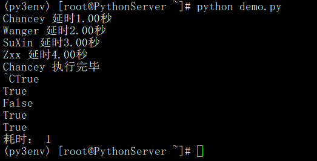
可以看到，这里的chancey协程对象执行完毕，所以在后边取消的时候返回False
除了上边的方法，还可将task列表封装进run函数中，然后run函数对外调用事件循环。届时，run相当于最外层的task，这时只需要处理包装过的task也就是run函数即可
import asyncio
import time
async def work(name, hour):
print('%s 延时%s秒' % (name, hour))
await asyncio.sleep(hour)
return '%s 执行完毕' % name
async def run():
name_list = ['Chancey', 'Wanger', 'SuXin', 'Zxx']
coroutine_list = []
for hour in range(1, 5):
hour = hour
name = name_list[hour - 1]
coroutine_list.append(work(name=name, hour=hour))
task_list = []
for coroutine in coroutine_list:
task_list.append(asyncio.ensure_future(coroutine))
done, pending = await asyncio.wait(task_list)
for task in done:
print('Task ret: ', task.result())
if __name__ == '__main__':
now = lambda: time.time()
start = now()
loop = asyncio.get_event_loop()
task = asyncio.ensure_future(run())
try:
loop.run_until_complete(task)
except KeyboardInterrupt as e:
print(asyncio.gather(*asyncio.Task.all_tasks()).cancel())
loop.stop()
loop.run_forever()
finally:
loop.close()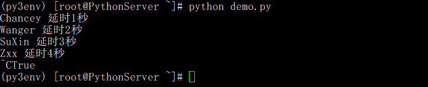
greenlet该模块旨在提供可自行调度的微线程，在greenlet中，target.switch(value)可以切换到指定的协程，从一个协程切换到另一个协程需要显式指定。
使用前请安装pip install greenlet
步骤
greenlet对象switch切换任务from greenlet import greenlet
import time
def func1():
while True:
print('正在执行 func1')
time.sleep(1)
f2.switch()
def func2():
while True:
print('正在执行 func2')
time.sleep(1)
f1.switch()
if __name__ == '__main__':
# 创建任务对象 greenlet(函数名)
f1 = greenlet(func1)
f2 = greenlet(func2)
# 手动切换任务
f1.switch() # 执行func1因为greenlet对象本身就是协程，它已经有了yeild的特性。而在函数里面手动切换任务，即使用greenlet().switch()来实现，这时的运行依然没有开启线程。
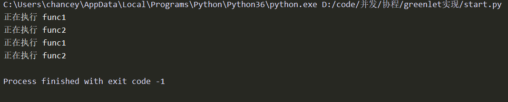
这样下来所有的调度全部交由greenlet实现，确实很方便，还有更方便的
gevent前边使用greenlet发现调度不需要手动实现了，但是要手动切换任务，那么，gevent弥补了之前的不足，它可以实现自动切换任务的功能。
依旧是第三方库，需要安装pip install gevent -i https://pypi.douban.com/simple
原理
当一个greenlet遇到IO阻塞的时候，就自动切换到其他的greenlet执行，等到IO操作完成的，在适当的时候切换回来继续执行。由于IO操作非常耗时，经常使程序处于等待状态，有了gevent自动切换任务，就保证了总有greenlet在运行。
步骤
import gevent
import time
def func1(name):
while True:
print('%s 正在执行 func1' % name)
time.sleep(1)
def func2():
while True:
print('%s 正在执行 func2' % name)
time.sleep(1)
if __name__ == '__main__':
names = ['Chancey', 'Wanger', 'SuXin']
# 指派任务
task_list = []
for name in names:
task_list.append(gevent.spawn(func1, name))
task_list.append(gevent.spawn(func2, name))
for task in task_list:
task.join()奇怪，没有切换任务？？？？我自己也研究好长时间，后来在官方文档中看到
原来这里的time.sleep()并不能被gevent识别，需要用自己的方法，gevent.sleep()来延时
import gevent
import time
def func1(name):
while True:
print('%s 正在执行 func1' % name)
gevent.sleep(1)
def func2(name):
while True:
print('%s 正在执行 func2' % name)
gevent.sleep(1)
if __name__ == '__main__':
# 指派任务
f1 = gevent.spawn(func1, 'Chancey')
f2 = gevent.spawn(func2, 'Wanger')
f1.join()
f2.join()这里就有个问题，项目中的代码封装好了不能改怎么办？届时就可以用打补丁的方式让gevent能够识别到time.sleep()阻塞。
打补丁
在不修改源代码的前提下，增加新的功能，这就用到了monkey库
步骤
from gevent import monkeymonkey.patch_all()：破解